Arms & legs
121 conditions and symptoms
 Achilles tendinopathy
Achilles tendinopathy Athlete's foot
Athlete's foot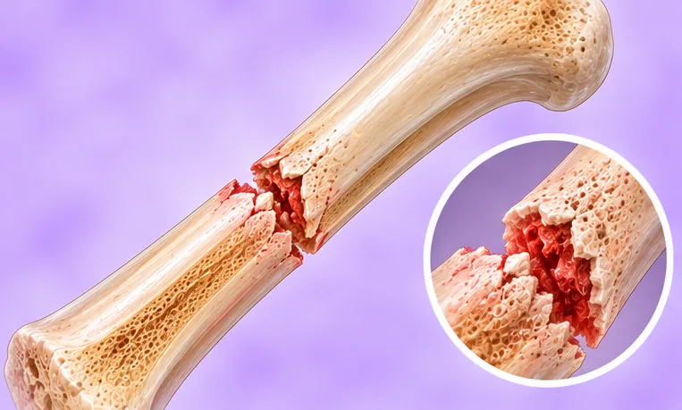
Avulsion fracture (bone pulled off)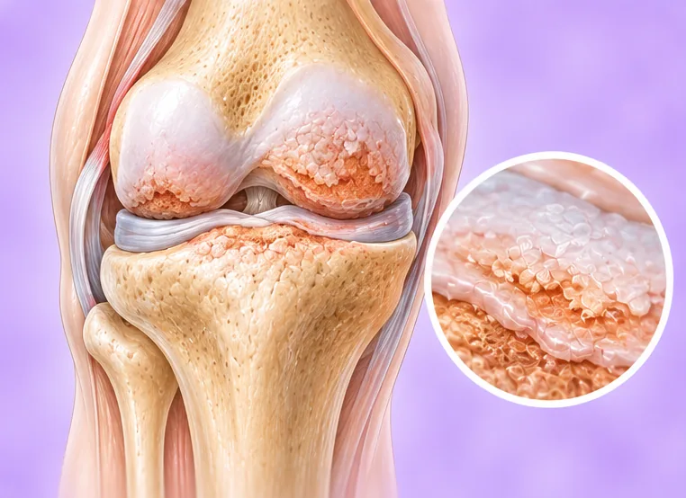
Baker's cyst (cyst behind the knee)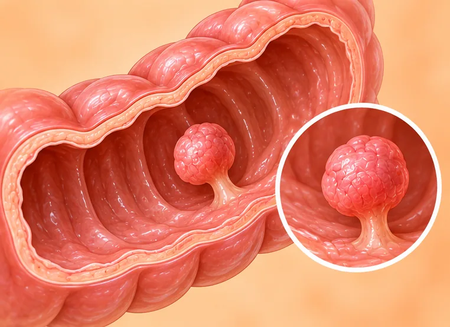
Benign duodenal tumour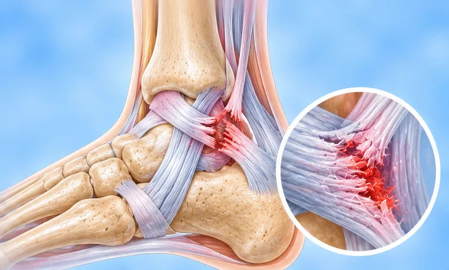
Big toe joint bursitis- Blisters on the feet
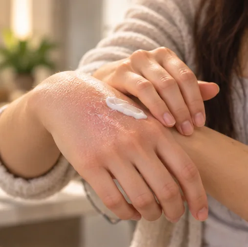
Blisters on the palms- Blisters on the soles of the feet
- Blisters on the toes
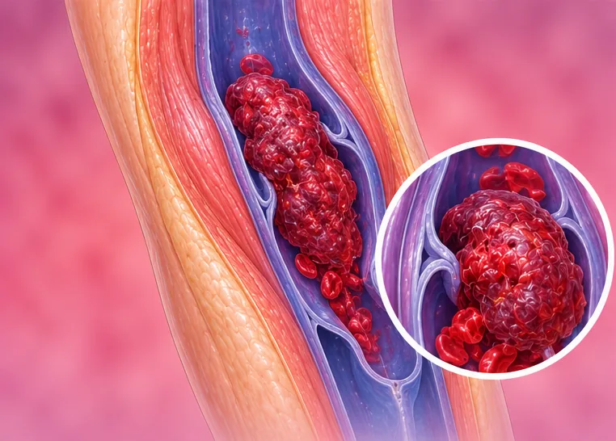
Blood clot in the leg (DVT)- Bone pulled off below the knee (tibial tubercle)
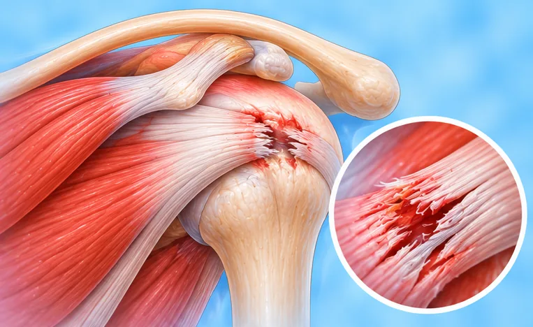
Brachial plexus (shoulder-arm nerve) injury- Broken ankle
- Broken ankle on three sides (trimalleolar)
- Broken finger
- Broken foot bone (metatarsal)
- Broken forearm
- Broken hip (femoral neck fracture)
- Broken hip socket (acetabulum)
- Broken kneecap
- Broken shin and calf bones
- Broken toe
- Broken upper-arm bone
- Broken wrist (distal radius fracture)
- Broken wrist bone (carpal)
- Buerger's disease (thromboangiitis obliterans)
- Bumps on the palms
- Bunion (hallux valgus)
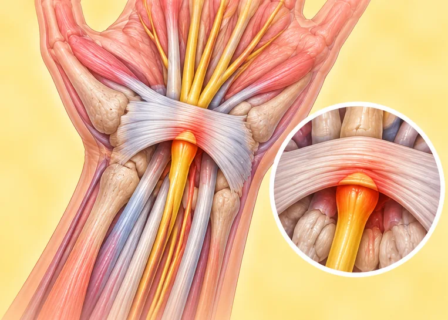
Carpal tunnel syndrome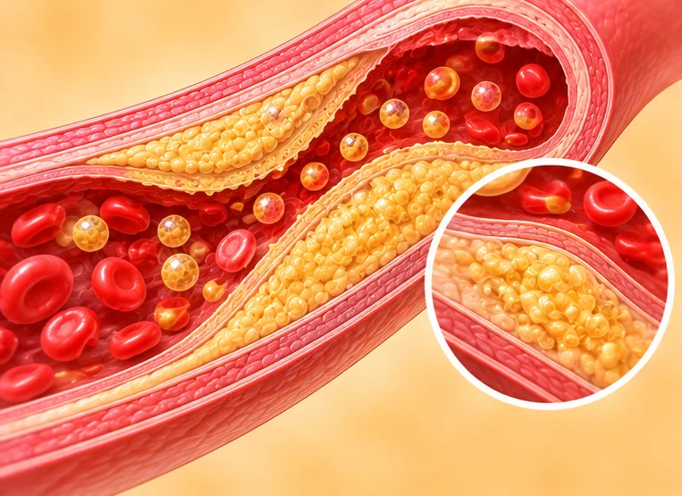
Cold feet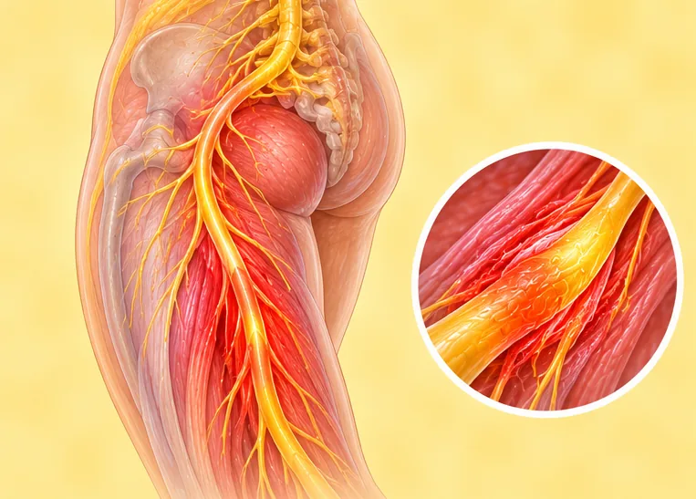
Common peroneal nerve injury (foot drop)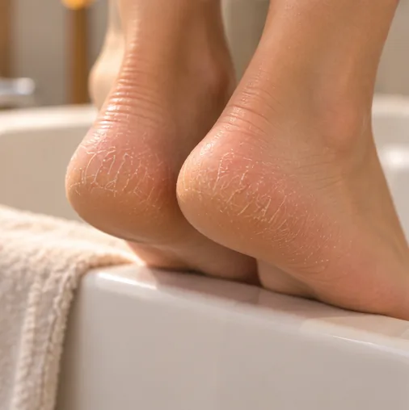
Cracked feet- Cubital tunnel syndrome
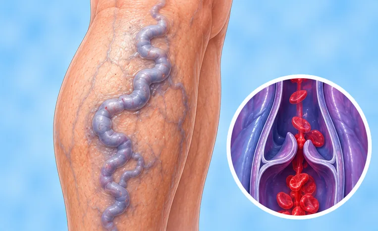
Deep vein thrombosis (DVT)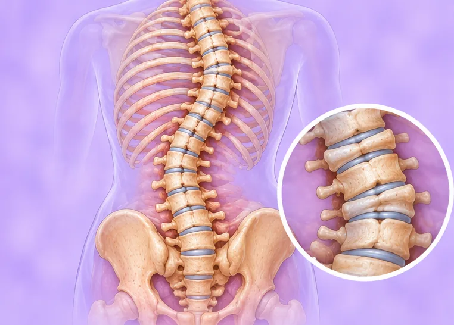
Degenerative scoliosis- Deltoid ligament injury (inner ankle)
 Diabetic foot
Diabetic foot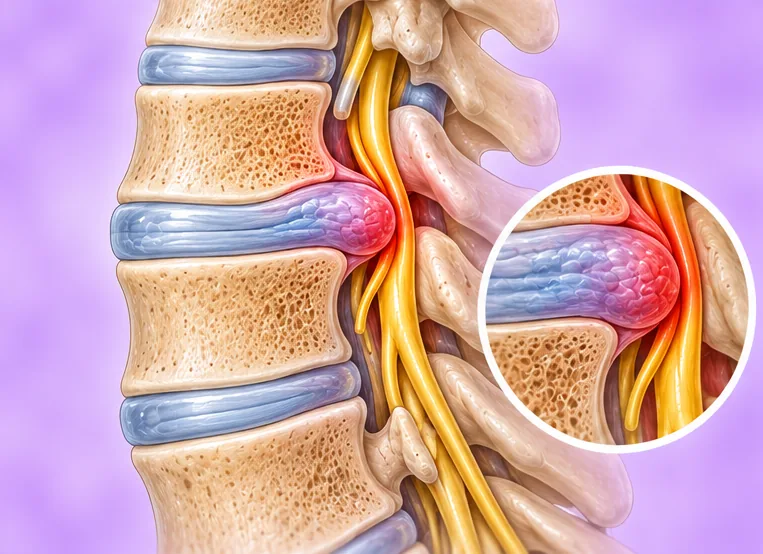
Discoid meniscus (knee, from birth) Dislocated ankle
Dislocated ankle- Dislocated hip
- Dislocated knee
- Dislocated shoulder-top joint (AC joint)
- Dry, cracked and peeling feet
- Dry, cracked hands
- Dry, cracked heels
 Duodenal obstruction
Duodenal obstruction- Erosive athlete's foot (tinea pedis)
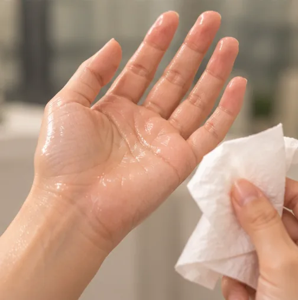
Excessive hand sweating (palmar hyperhidrosis)- Finger flexor tendon sheath inflammation
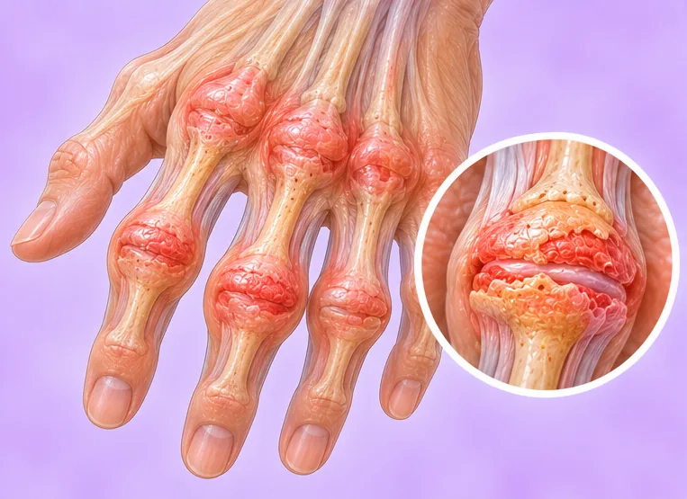
Finger joint arthritis- Fingertip infection (felon)
- Flaky skin on the fingers
- Flat feet
- Frozen shoulder
- Galeazzi fracture (forearm and wrist joint)
- Ganglion cyst of the hand
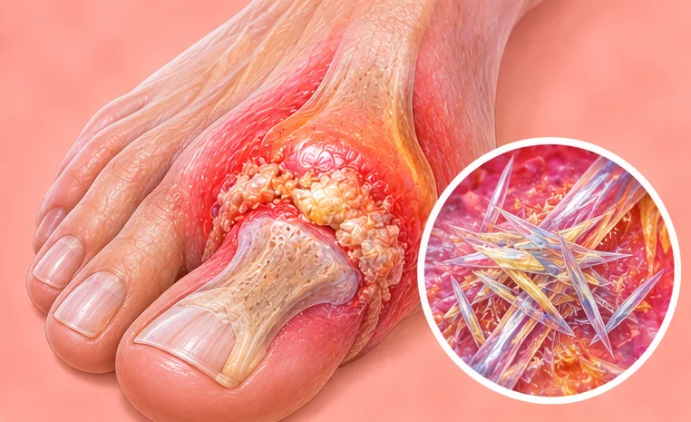
Gout- Hand injury
 Hip bone death (avascular necrosis)
Hip bone death (avascular necrosis)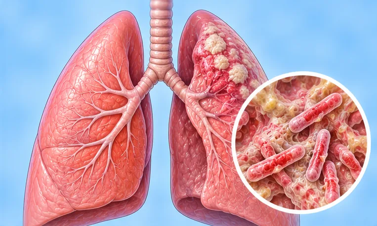
Hip joint tuberculosis (TB)- Itchy feet
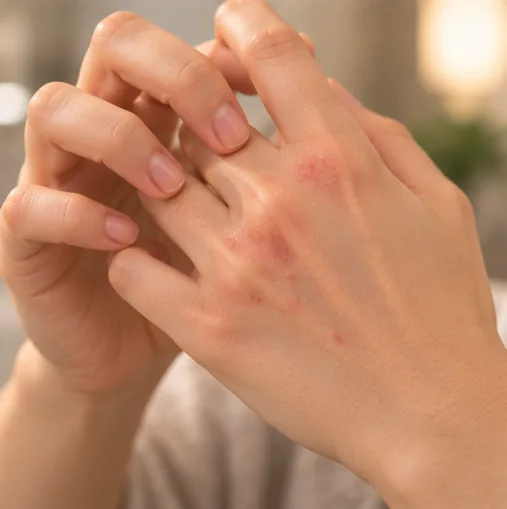
Itchy fingers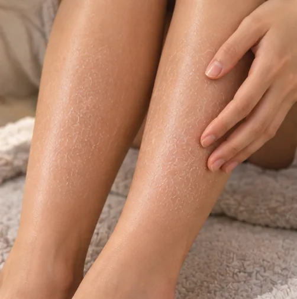
Itchy lower legs- Itchy palms
- Itchy soles of the feet
- Itchy toes
- Itchy tops of the feet
- Joint degeneration (wear and tear)
- Knee arthritis
- Knee bone spurs (osteophytes)
- Knee joint tuberculosis
- Knee ligament injury
- Knee synovitis (joint lining inflammation)
- Kneecap cartilage softening (chondromalacia patella)
- Median nerve injury
- Meniscus cyst (knee)
- Meralgia paraesthetica (outer thigh nerve pain)
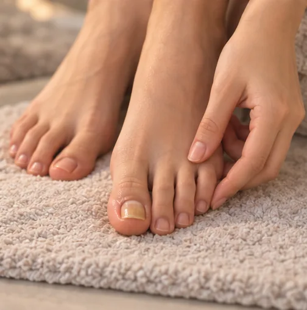
Nail dystrophy (abnormal nails)- Neck and shoulder syndrome
- Numbness in the lower leg
- Open sores on the feet
- Osgood-Schlatter disease
- Peeling skin on the fingers
- Peeling skin on the hands and feet
- Peeling skin on the palms
- Peeling skin on the soles of the feet
- Plantar fasciitis (heel pain)
 Protein-energy malnutrition
Protein-energy malnutrition- Radial nerve injury (wrist drop)
- Red palms
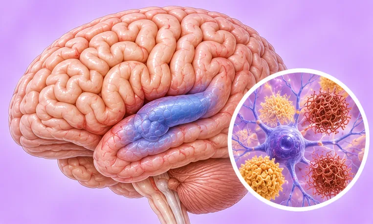
Restless legs syndrome- Rheumatic arthritis
- Rheumatoid arthritis
- Rotator cuff injury
- Shoulder joint instability
- Side ligament injury (knee)
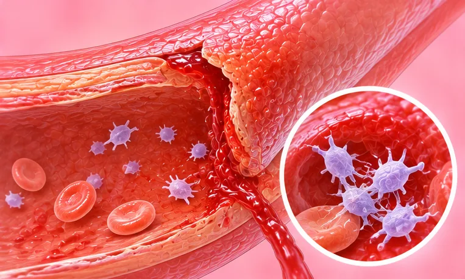
Simple purpura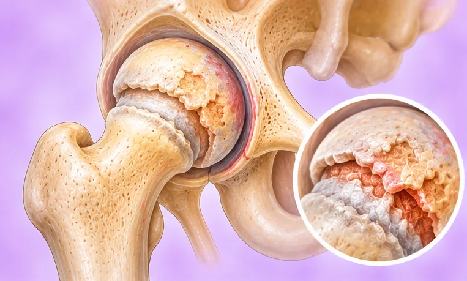
Snapping hip (clicking hip joint)- Sprained ankle
- Sprained knee
- Sprained wrist
- Stenosing tenosynovitis (trigger finger, wrist)
- Sweaty hands
- Sweaty hands and feet
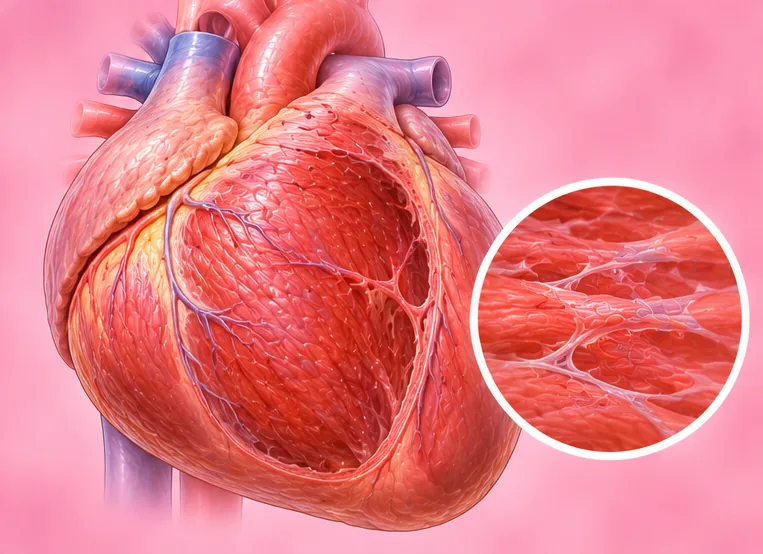
Swelling in both feet (oedema)- Swollen ankles and tops of the feet (oedema)
- Swollen feet
- Tendon sheath giant cell tumour
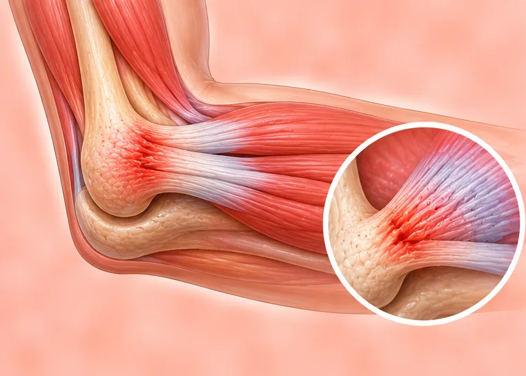
Tennis elbow- Thick legs
- Toe ulcers
- Torn Achilles tendon
- Ulnar nerve injury (little-finger side of the hand)
 Upper spinal cord paralysis (high paraplegia)
Upper spinal cord paralysis (high paraplegia)- Varicose veins
- Varicose veins in the legs
- Venous ulcer on the lower leg
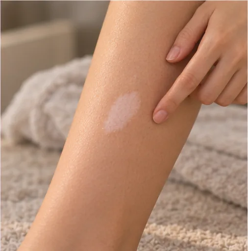
White patches on the legs- Worn meniscus (knee)
- Yellow soles of the feet